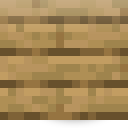

ストレージモジュール
alaindustrial:storage_module
概要
ストレージモジュールは 27 スロットのブロックで、最大の特徴は 隣接する仲間と結合できる ことです。 2 つのモジュールをぴったりと置けば、共通ウィンドウで 54 スロットの 1 つの収納になります。3 つで 81。 4 つで 108、これが上限です。
どの モジュールをクリックしても開きます：ウィンドウは常に倉庫全体を表示し、クリックした ブロックの 27 スロットだけを示すわけではありません。
エネルギー不要、レッドストーン不要、形状は自由 — 壁、柱、L 字。唯一のルール：モジュールは 面で 接しなければならず、辺や角ではありません。
ミニ例： モジュールを置き、詰め切れなくなった。2 つ目を隣接して増設：どちらを開いても 中は 54 スロットの一覧。
エネルギー
| 項目 | 値 |
|---|---|
| 役割 | なし |
| バッファ（EU/FE） | 0 |
| 最大入力（EU/FE/ティック） | n/a |
| 最大出力（EU/FE/ティック） | n/a |
| EU/FE/ティック | 0 |
モジュールはエネルギーネットワークに参加しません：EU/FE を伝導せず、ケーブルに接続されません。
インベントリ
| スロット | 受け入れ | 数 |
|---|---|---|
| モジュールの収納 | あらゆるアイテム | 27（3 段 × 9） |
アイテムは物理的に置いたモジュールの中にあります。 共通の「メイン」インベントリはありません： 倉庫のウィンドウは全モジュールのインベントリを一覧できるビューであり、独立した収納ではありません。 ここから他の挙動が派生します：破壊時に何がドロップするか、チャンクがアンロードされた時に何が起きるか。
共通倉庫の積み上げ方
| 隣接モジュール数 | 倉庫のスロット | 全段数 | 表示される段数 | スクロール |
|---|---|---|---|---|
| 1 | 27 | 3 | 3 | なし |
| 2 | 54 | 6 | 6 | なし（バーは非活性） |
| 3 | 81 | 9 | 6 | 3 段 |
| 4 | 108 | 12 | 6 | 6 段 |
| 5 以上 | 108（上限） | 12 | 6 | 6 段 |
スロットと段数は 変わっていません — 変わったのはウィンドウだけです：6 段以上は表示せず、 残りは右側のスクロールバーで表示します。なぜ 6 段なのかは「バランス」の節で。
結合ルール
モジュールは、倉庫の別のモジュールに 面で 接する場合に倉庫へ入ります。辺や角での接触は カウントされません — これで 2 つの独立した倉庫をぴったりと並べられます。 セットはウィンドウを開くたびに再計算されます：クリックしたモジュールから走査します。 何も記憶されないため、モジュールの設置や撤去は再構築を一切不要とします。 構造内にモジュールが 4 個より多い場合、走査順の最初の 4 個が倉庫に入ります。同じ構造の別の モジュールをクリックすると別の 4 個になる可能性があります — ウィンドウは接続されたモジュール数を 表示するため、見えます。
インターフェース
ウィンドウは 2 サイズ：単体モジュールは 3 段（176×166）、 それより大きい倉庫は 6 段（195×220）。 スクロールバー — グリッドの右、パネル幅に追加された 19 px。マウスホイール、つまみのドラッグ、 レールのクリックに対応します。 2 モジュールの倉庫にはスクロール対象がなく、バーは 非活性の色合い で描かれます。消えるのでは ありません：あるかないか分かりにくい要素より、見えて無効な方が読みやすいです。 Shift クリックは画面にない段にもアイテムを置きます。 これは些細なことではありません：バニラの shift クリックはメニュースロットで動作し、ウィンドウには 6 段しかないため、「自明な」実装は倉庫の 中途で静かに止まり、半分空いているのに「満杯」と報告していました。 検索はありません — 108 スロットには小さすぎます。
何が同期されるか。 ContainerData の 2 つの数値：倉庫の全段数と、ウィンドウが位置する段。 前者はクライアントがバーを描くのに必要で、後者はつまみを置くのに必要です。両方の所有者はサーバーです。 スクロール自体はバニラの で動き、ボタン番号が希望の最上段です。サーバーがそれを クランプするため、「500 段目を見せて」パケットが倉庫の範囲外を読むことはありません。
なぜビューであって、スロットの引っ越しかでないか。 Slot.x/Slot.y は public final で、 メニューのスロットリストはネットワーク契約の一部です：ClientboundContainerSetSlot のインデックスは その中の位置であり、稼働中のメニュー下でリストを再構築するとクライアントを同期不全にします。 バニラで唯一のスクロール可能なショーケース（クリエイティブインベントリ）も同じ解決策です： スロットは動かず、動くのは後ろのコンテナが応答する対象です。
ブロックの性質
| 項目 | 値 |
|---|---|
| 形状 | 完全な立方体 16³ |
| 硬度 | 3.0 |
| 爆発耐性 | 6.0 |
| ツール | ツルハシ |
| NBT ドロップ | false — 中身はアイテムに 保存されない |
外観：倉庫は 1 つのキャビネットに見える
モジュールは 3 つの引き出し を持つ鋼のキャビネットです：ウィンドウに追加する 9 スロットの段につき 1 つの引き出し。上下は引き出示ではなく、奥まったサービスパネル付きの本体のスラブです。
隣接するモジュールは 外見的にも結合 します。2 つのモジュールが接する面ではフレームが消えます： 引き出しの化粧板が継ぎ目を越えて続き、カバーが 1 つの天板に融合し、フレームは倉庫の外周にのみ残ります。 2×2 の壁は 6 引き出しの 1 つのキャビネットに、4 つ並びは 1 つの長いキャビネットに見えます。
結合した外観は、倉庫が 1 つであることを正確に意味します。 構造内のモジュールが 4 個を超えると すべて同時に フレームが戻り、構造は再び個別のキャビネットの集まりに見えます。これは化粧ではなく、 正確なシグナルです：そのような構造では倉庫はどのモジュールをクリックしたか次第（「結合ルール」参照） で決まり、どんな継ぎ目も 2 つのブロックが 1 つの収納であると保証できません。余分なモジュールを 外せば結合した外観が戻ります。
辺や角での接触は機構も画像も結合させません：2 つの倉庫をぴったりと置けば、視覚的に別のままです。
どう描かれるか。 結合はブロックモデル自体に組み込まれ、その上に重ねられていません。各面は 重複しない矩形に分割されます — 各辺に 1 つの帯、カバーの四隅のピクセル 4 個、そして中央 — 各矩形はちょうど 1 回だけ描画されます：フレーム付きテクスチャからか、「開いた」テクスチャからか。 何も外側にずれず、何も何にも重ならないため、継ぎ目が別の平面で光ることも、段差ができることもありません。 初版では代わりにキューブの上に 0.1 ブロックずらしたパッチを置き、プレイヤーは天板に継ぎ目沿いの 盛り上がった帯と、パッチが終わる短い黒い線を見ていました。
カバーのフレームの角は 2 つの辺にまたがるため、両方の 隣接がある場合にのみ外されます。 一方の辺に渡すことはできません：「北-南」の継ぎ目が西と東のフレームに 2 ピクセルの穴を開けます。
ブロックステートと 21 個のモデルは 生成 され（python tools/gen_storage_module_models.py）、 ジェネレータ経由でのみ編集されます。--check（ と pre-commit に入る）はファイルを ジェネレータと照合し、別途シームレスさを証明します：各面の各ピクセルはちょうど 1 回描画され、 どの要素もブロックのボリュームを越えず、モデルから組み立てた壁と天板は、フレーム付きテクスチャ だけから作った「1 つの大きなキャビネット」のリファレンスとピクセル単位で一致します。
モジュールを破壊すると自身の中身だけがドロップします。 隣接モジュールは影響を受けません： アイテムはそこにあり、どこへも引っ越していません。
構造の途中のモジュールを破壊すると、構造を単に分割します — 各部分は独立した倉庫になります。 切り離されたモジュール内のアイテムは ドロップしません：所定の位置にあり、接続が回復すると再び 共通ウィンドウに現れます。
隣にある組立機自体を破壊すると、プレイヤーに戻るのはその自身の中身だけ — 設計図キューと出力ゾーン — であり、モジュールには触れません（TC-ASM-026 はドロップした数を 正確な数値として数え、損失も双重ドロップも見えます）。 倉庫解体時の容量カウンタはゼロまで下がり、マイナスに離れません（TC-STOR-010 — Functional Storage の負のカウンタはクラッシュで終わっていました）。
パイプによる充填と取出しは、ポートの有無でなく転送で固定されています。 TC-STOR-012 は 16 個のインゴットをチェスト → パイプ → 倉庫へ、そして戻し、別途「ドライラン」（simulate）が 何も動かさず、実際の操作が後に運ぶ量とちょうど同じ量を約束することを検証します — この 2 つの数の乖離こそ古典的な複製バグです（XNet #173）。
中身は再読み込みを生き残ります。 TC-STOR-013 はモジュールを NBT 経由で（チャンクの保存と 読み込みと同じ経路で）駆動し、スロットがずれないことも検証します：2 つの占有スロットの間に意図的に 空けたスロットは空のままでなければなりません。
レシピ
クラフト： — 鉄板 4 個を バニラのチェストの周りに十字に。
レシピは意図的に安価です：容量増設は進行の節目ではなく、消耗品です。
進行
ティア：なし — エネルギー不要、最初の板の直後に利用可能。 収納の系譜での位置：鉄のチェスト 36 → 銀のチェスト 45 → 金のチェスト 54 → エレクトラムのチェスト 81 → モジュールの倉庫 108。チェストは価値を下げません：1 ブロックで全容量を与え、倉庫は 4 個を要します。 次：組立機がこの倉庫から直接原料を取れるようになります。
関連項目
金のチェスト — 前段の収納 材料の形態 — クラフト用の板 在庫表示額縁 — アンロード済みチャンク対策の見本 組立機 — 倉庫の将来の消費者 アイテムパイプ — 倉庫を外から充填
クラフト
定型クラフト

▶
ストレージモジュール
用途
定型クラフト
▶
組立機